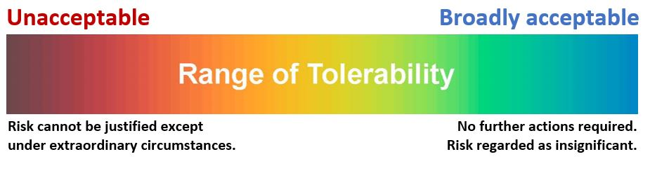
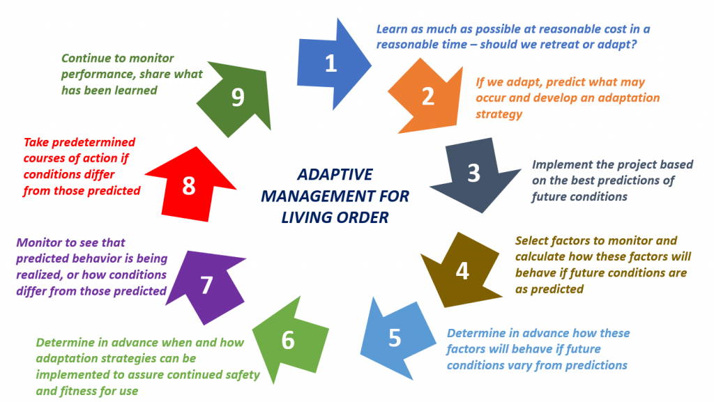

I appreciate the invitation from the authors of Technical Project Management in Living and Geometric Order to prepare this appendix, which presents examples of risk and uncertainty faced in current civil infrastructure projects. This appendix is intended as a practical illustration of ideas presented in Lesson 8, “Managing Project Risks.”
— Larry Roth, Vice President, Arcadis I.S., Inc., and former Executive Vice President on the staff of the American Society of Civil Engineers
The Big Ideas in This Appendix
Climate change has greatly increased the risk we face in planning, designing, and operating civil infrastructure. Much of this risk stems from new uncertainty in our ability to predict environmental conditions that will affect design and operation of infrastructure projects. For example, we already see significant changes in precipitation patterns and increased frequency of extreme weather-related events. Unfortunately, we don’t know enough about the far-reaching effects of climate change to be able to confidently predict future conditions, and to assume worst-case conditions may be foolhardy or wasteful. The following three project examples illustrate how climate change increases risk and uncertainty in civil infrastructure design and operation.
These and other projects today clearly illustrate that climate change requires new approaches. In an opinion piece for the Engineering News-Record (ENR), William A. Wallace challenged engineers to develop infrastructure solutions that recognize the risk and uncertainty posed by a changing climate. To do that, he argues, engineers must rethink the foundational engineering assumption of stationarity, which presumes that “past environmental conditions are good predictors of future ones.” Until relatively recently, using past conditions to predict the future enabled engineers to “plan, design and deliver long-lived infrastructure, confident that projects would be safe, reliable, and efficient.” Climate change, however, has upset the apple cart. Wallace argues that engineers must embrace non-stationarity as “the new normal” because ”long-held engineering assumptions about environmental conditions are no longer reliable, so projects may not function the way they’re supposed to and can present a significant risk to public health, safety, and welfare” (Wallace 2018).
This is a big deal—past is no longer prologue. Risk and uncertainty have increased.
Stationarity is a geometric-order concept that presumes things remain unchanged over time. Non-stationarity, a profoundly living-order concept, presumes the opposite—that things change over time, sometimes rapidly and often in unpredictable ways. Managing a project based on non-stationarity is a living-order undertaking, requiring flexibility, adaptability, and creativity.
How can we learn to live in living order to best anticipate what climate change might bring? John Matthews of Conservation International says, “Let’s not just design for a single future; let’s think about multiple possible futures.” Because we cannot be sure which of the multiple futures climate change might bring, we must be able to adapt to the environmental conditions that develop during the useful life of the project. In other words, we must be able to react and adjust so that infrastructure remains safe and fit for use. The Federal Highway Administration (FHWA) offers guidance on adaptation strategies for multiple futures in its “Synthesis for Approaches for Addressing Resilience in Project Development” (2017). These strategies include the following:
To address the living order challenge of climate change, we must evaluate adaptation strategies in our infrastructure projects to satisfy present-day budget constraints while maintaining the ability to adjust to conditions that differ from our best predictions made during design. Risk assessment is a useful tool to help us evaluate adaptation strategies for civil infrastructure; to tailor those strategies to meet our needs at a level of risk we find tolerable and acceptable; and to enable us to effectively communicate risk to stakeholders and the public. Recall from Lesson 8 that risk is the potential for loss or injury. Put simply:
Risk = Probability of an event x Consequences of that event.
To assess risk, we need to know:
Under unchanging environmental conditions, or stationarity, risk assessment is sensitive to changes in input values; uncertainty associated with the input data and calculation models will affect the result. Non-stationarity associated with climate change introduces more knowledge uncertainty into the analysis, making it even more important to include both a sensitivity analysis and an uncertainty analysis in the risk assessment. A sensitivity analysis helps quantify the effects of small or large changes in input values on the result. An uncertainty analysis uses probabilistic methods to assess the level of confidence we can have in the result. For example, non-stationarity makes our estimates of the nature and likelihood of future hazards uncertain because of natural variability, and because we can only make rough estimates of how climate change will affect the types of hazards we will face and the probability of those hazards occurring. The goals of sensitivity and uncertainty analyses are 1) to understand how variations in input values affect the result; 2) to quantify the uncertainty in the result, and; 3) if possible, to identify which uncertain input values contribute most to total uncertainty
Two key definitions are essential to risk assessment:

Applying the concept of tolerable risk offers an informed and appropriate basis on which to formulate risk management policy and to prioritize and allocate scarce resources for risk reduction. Tolerability of risk informs deliberations on “how safe is safe enough?” and creates a sound basis for better understanding of risk; improved communication of risk and risk-related issues; transparency in risk decision-making; and overall enhanced risk management. When we quantify risk using probability and consequences, we can also quantify risk reduction afforded by various adaptation strategies, which enables us to make quantitative comparisons of solutions that may be more resilient, sustainable, and cost-effective.
In civil infrastructure, the basic principles of tolerable risk are that life safety is paramount, that risk cannot be ignored, and that absolute safety cannot be guaranteed. The goal is to reduce risk to as low as reasonably practicable—that is, to focus on what can be reasonably achieved without spending an inordinate amount of time, money, and resources to reduce risk relative to benefits. To meet this goal, application of the concept of tolerable risk requires consideration of
Application of the concept of tolerable risk to decision-making regarding multiple possible futures caused by our changing climate offers many advantages. The concept of tolerable risk
Using the concept of tolerable risk means we can avoid making decisions regarding risk reduction based on judgment and stakeholder preferences. Instead, we can consider issues such as resilience and sustainability, and efficient use of resources. When we quantify risk using probability and consequences, we can also quantify risk reduction afforded by a variety of adaptation strategies, which enables identification of solutions that may be more resilient, sustainable, and cost-effective.
Risk assessment, no matter how thorough and well-executed it might be, cannot eliminate living order uncertainty that civil infrastructure will face in a changing climate. Risk assessment can be useful, however, in improving our ability to manage uncertainty using adaptive management to incorporate adaptation strategies for multiple futures. Adaptive management is a framework of flexible decision-making for ongoing knowledge acquisition, monitoring, and evaluation. It’s a process of continuous improvement in planning, design, and operation to ensure specified objectives are achieved.
Adaptive management enables structured decision-making to reduce uncertainty by using a process that incorporates advanced planning, observation and measurement of conditions, selection of pre-determined response actions based on conditions observed, and feedback of accrued information to improve future management actions. Adaptive management is useful for dealing with the effects of climate change because it allows us to react to changing conditions while learning more about both the impacts of change and the success or failure of our adaptation strategies.
Because the complex relationship between the works of man and the environment is further complicated by climate change, we cannot know what the future will bring. We have, however, an obligation to design infrastructure that is safe and fit for use today, and that is resilient and adaptable to the inevitable changes we will see. Figure A-2 illustrates an adaptive management process for living order to provide a robust framework that can guide future actions to assure safety and fitness for use.

As the earlier project examples demonstrate, our approach to design two decades or more ago relied on the geometric-order concept of stationarity. Climate change, however, dictates that we employ the living-order concept of non-stationarity to meet our current and future needs for safe, reliable, and efficient infrastructure. Risk assessment is a valuable means to better understand the risk and uncertainty climate change will bring. Quantifying risk using probability and consequences enables us to better understand, manage, and communicate that risk and uncertainty. We can also make quantitative comparisons of solutions to find those that are resilient, sustainable, and cost-effective by quantifying risk reduction afforded by various adaptation strategies. Finally, application of adaptive management processes can ensure that infrastructure we design and build today will be fit for use and safe in a future world that has been altered by climate change.
adaptive management—A framework of flexible decision-making for ongoing knowledge acquisition, monitoring, and evaluation. It requires continuous improvement in planning, design, and operation to ensure specified objectives are achieved.
non-stationarity—”The presumption that, because of climate change, past environmental conditions are no longer a reliable predictor of future conditions” (Wallace 2018).
residual risk—The risk that persists even after all reasonable and practicable measures to eliminate risk have been implemented.
stationarity—A fundamental assumption of engineering that presumes “past environmental conditions are good predictors of future ones.” Until relatively recently, using past conditions to predict the future enabled engineers to “plan, design and deliver long-lived infrastructure, confident that projects would be safe, reliable and efficient” (Wallace 2018).
Federal Highway Administration (FHWA). 2017. Adaptation Clearinghouse. July. Accessed August 12, 2019. https://www.adaptationclearinghouse.org/resources/fhwa-synthesis-of-approaches-for-addressing-resilience-in-project-development.html.
Wallace, William A. 2018. “Viewpoint: Lead on Climate Change Solutions Before It’s Too Late.” Engineering news-Record. Accessed August 12, 2019. https://www.enr.com/articles/45689-lead-on-climate-change-solutions-before-its-too-late.